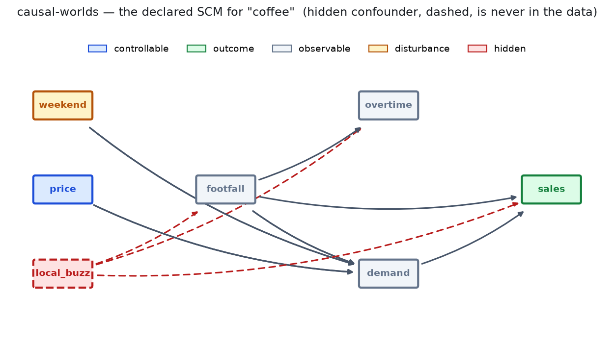
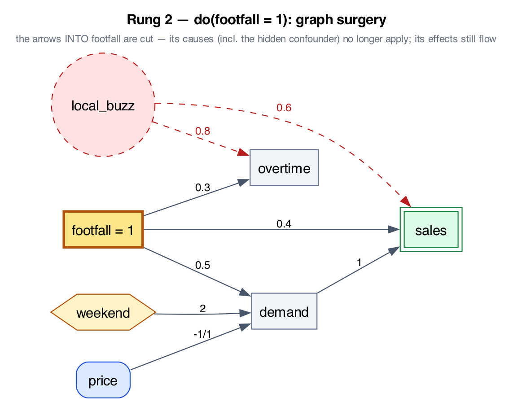
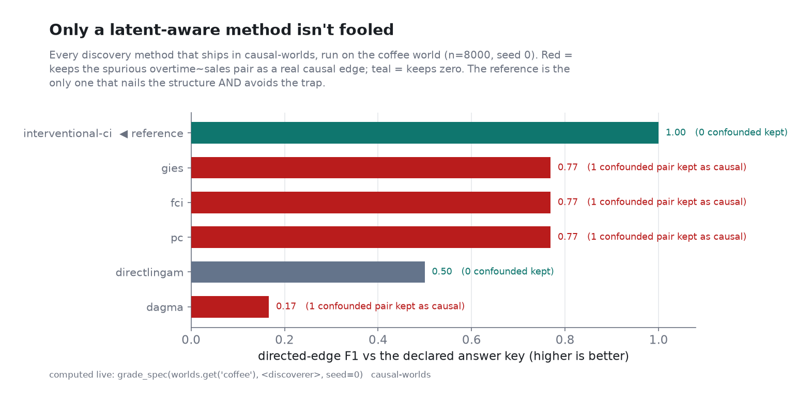
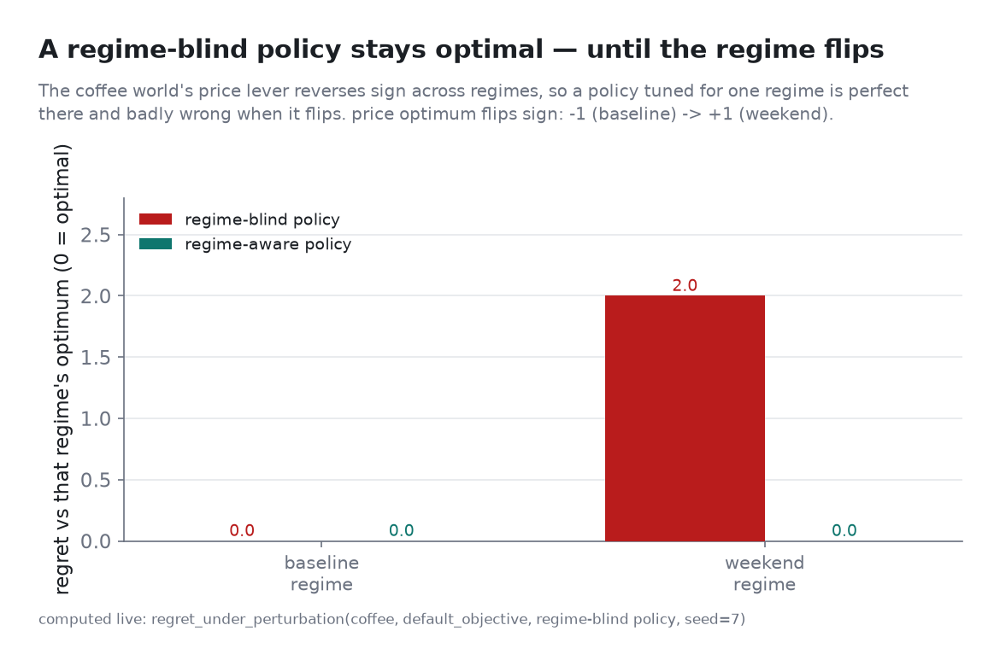

open source · MIT · pip install causal-worlds
Turn a plain-language description of an operation into a fictional-but-coherent causal
world with a declared ground-truth causal graph. See its correlations, intervene with
do(), ask counterfactuals — and check every answer against the truth, because you wrote it.
In the built-in coffee world, overtime and sales rise
together. A naive analyst "discovers" that overtime drives sales. But force overtime with an
intervention and watch sales — it doesn't move. The whole link was a hidden confounder.

import numpy as np
from causal_worlds import build_substrate, worlds
sub = build_substrate(worlds.get("coffee"), standardize=False)
ov, sa = sub.variables.index("overtime"), sub.variables.index("sales")
seen = sub.sample(40_000, seed=0).data
corr = np.corrcoef(seen[:, ov], seen[:, sa])[0, 1] # ≈ 0.64 → looks causal
hi = sub.sample(40_000, seed=1, do={"overtime": 1.0}).data[:, sa].mean()
lo = sub.sample(40_000, seed=1, do={"overtime": -1.0}).data[:, sa].mean()
print(round(corr, 2), round((hi - lo) / 2, 2)) # 0.64 0.00 → strong correlation, ZERO causal effectAssociation — what correlates. The data alone can't tell you why.
do() is genuine graph surgery — cut the arrows into a variable, keep the arrows out. The mirage vanishes.
Counterfactuals (abduction → action → prediction), exact — on cross-sectional and temporal worlds.

do(footfall): arrows into footfall are cut; its effects still flow. Verified genuine surgery, not conditioning.Rung 3 — imagine a different past on the same day. Because the SCM is declared, the counterfactual is exact (abduction → action → prediction):
from causal_worlds import counterfactual, worlds
cf = counterfactual(worlds.get("coffee"), do={"footfall": 2.0}, seed=0)
print(round(cf.factual["sales"], 2), "->", round(cf.counterfactual["sales"], 2)) # 3.24 -> 4.55One generator, several jobs. The coffee world above is one cross-sectional example; the same machinery spans discovery and control, cross-sectional and temporal.
Implement one function — recover() — and score it against the answer
key, with PC, FCI, GES, GIES, DAGMA, and DirectLiNGAM wrapped as baselines to beat.
The same worlds are a control gym: a by-construction optimal policy,
regret, and regret-under-perturbation, plus a
gymnasium.Env whose regime shifts under you.
Lagged, autoregressive worlds with a lagged answer key and temporal counterfactuals — graded against PCMCI+, LPCMCI, VARLiNGAM, and Granger.
A test an LLM can't ace by reciting variable names: fiction-first, name-blinded, and audited so the only way to score is to actually discover.
Write a sentence and causal-worlds generate … --playground hands you an
executable world with its answer key — no benchmark gate in the way. elicit builds one
through dialogue; viz draws it.
Plug in your own discoverer or controller and see whether it recovers structure — and stays optimal — where the standard toolbox gets fooled.
Everything below runs with no API key (only authoring needs a model). Every number is from a live run.
Implement one function, recover() — or run the wrapped baselines — and
score against the answer key. The column that matters is confounded_reported: how many
spurious confounded pairs a method keeps as real edges.
from causal_worlds import worlds, grade_spec, InterventionalCiDiscoverer, PcDiscoverer, GiesDiscoverer
spec = worlds.get("coffee")
for name, disc in {"interventional-ci": InterventionalCiDiscoverer, "pc": PcDiscoverer, "gies": GiesDiscoverer}.items():
r = grade_spec(spec, disc(), seed=0)
print(f"{name:>18} F1={r.f1:.2f} confounded_kept={r.confounded_reported}")
# interventional-ci F1=1.00 confounded_kept=0 ← the only one that nails it AND avoids the trap
# pc F1=0.77 confounded_kept=1
# gies F1=0.77 confounded_kept=1
The same worlds are a control benchmark: the optimum is computable from the declared SCM, so a policy is graded by regret — and the load-bearing metric is regret under a regime shift.
from causal_worlds import worlds, default_objective, optimal_policy, regret_under_perturbation
spec = worlds.get("coffee"); obj = default_objective(spec)
print(optimal_policy(spec, obj)) # {'price': 0.0} ← declared optimum
# the price lever's sign flips across regimes, so a regime-blind policy collapses when it flips:
rep = regret_under_perturbation(spec, obj, {"price": -1.0}, seed=7)
print(rep.per_regime) # {'baseline': 0.0, 'weekend': 2.0}
Lagged, autoregressive worlds with a lagged answer key — and counterfactuals that roll a whole trajectory forward under a sustained intervention.
from causal_worlds import counterfactual_temporal, worlds
tcf = counterfactual_temporal(worlds.get("supply"), do={"order": 2.0}, seed=0, steps=200)
# hold orders high for 200 steps: stockout -2.68, inventory +3.35, cost +0.63 (mean shift)By default authoring builds a benchmark-grade world (rejected if it's guessable
from the variable names). Pass --playground to keep faithfulness + a difficulty score but
never reject — describe a world and just get it.
$ causal-worlds generate "a regional power grid with rooftop solar and time-of-use pricing" ./grid
not admitted: T4 cliché: names+roles recover it (prior F1 0.84 >= 0.5)
hint: re-run with --playground to author it anyway (guessability becomes an advisory score).
$ causal-worlds generate "a regional power grid with rooftop solar and time-of-use pricing" ./grid --playground
admitted -> ./grid difficulty=0.16 (advisory) # 8 edges + a hidden confounder, reference grader F1 0.93Zero-dependency SCM renderers — Mermaid (draws on GitHub) or Graphviz DOT, with path coefficients on the edges and hidden confounders dashed.
from causal_worlds import to_mermaid, worlds
print(to_mermaid(worlds.get("coffee"))) # or from the CLI: causal-worlds viz coffee --format dotA benchmark you can memorize isn't a benchmark. Fiction-first means there's nothing real to recite and no data to leak. Then we audited our own work and fixed what we found:
The headline crossover is an honest identifiability result: given the same interventions, standard methods keep a hidden-confounded pair as causal; only a latent-aware rule reaches zero. Details + the disclosed residuals: findings · foundations.
pip install causal-worlds
# in Python:
from causal_worlds import worlds, grade_spec, InterventionalCiDiscoverer
print(grade_spec(worlds.get("coffee"), InterventionalCiDiscoverer()))
# directed_shd=0 f1=1.0 confounded_reported=0 ← swap in YOUR discovererEngine, grading, and the graph renderers run offline; only authoring a fresh world from a
sentence needs a model — causal-worlds generate "…" ./world --playground for the
describe-and-get-it path, or the default for a benchmark-grade (name-unguessable) world.
causal-worlds viz coffee draws the world for you.